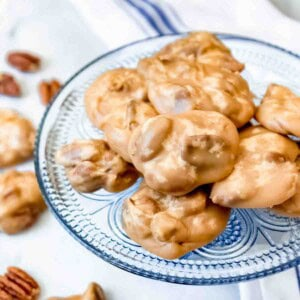

Pretty Pretty Pralines
How to make pretty southern pecan pralines
Ingredients:
- 6 Tbsp salted butter
- 2 cups pecan halves
- 1 tsp vanilla extract
- 1 1/2 cups granulated sugar
- 1 1/2 cups light strongrown sugar
- 1/4 tsp salt
-
1 cup evaporated milk or half-and-half
How to make:
-
Prepare a baking sheet by lining it with parchment paper and set aside.
-
In a medium-size heavy pot, combine the granulated sugar, brown sugar,
salt, evaporated milk, and butter. Cook and stir with a wooden spoon
over medium heat until the sugars dissolve and the mixture comes to a
boil.
-
Continue to cook until the temperature reaches between 235-240°F on a
candy thermometer (soft ball stage). Remove from heat and allow
the praline mixture to cool for 5 minutes.
-
Stir in the vanilla and pecans, beating by hand with a wooden spoon just
until the candy begins to lose its glossiness and thickens slightly,
about 2 minutes. If you beat too long, the candy will seize and start to
crumble.
If you don't beat it long enough, then pralines won't set properly
and will stay soft and sticky.
-
Work quickly to drop heaping tablespoons (I use a small cookie dough
scoop) of pecan praline mixture onto the parchment paper-lined baking
sheet. If the praline mixture begins to harden in the pan, add a
teaspoon of hot water at a time and stir to keep the mixture loose
enough to scoop and drop.
-
Cool completely until set and the pralines have reached room
temperature. Store in an airtight container on the counter for 2 weeks
or freeze for up to 2 months.
